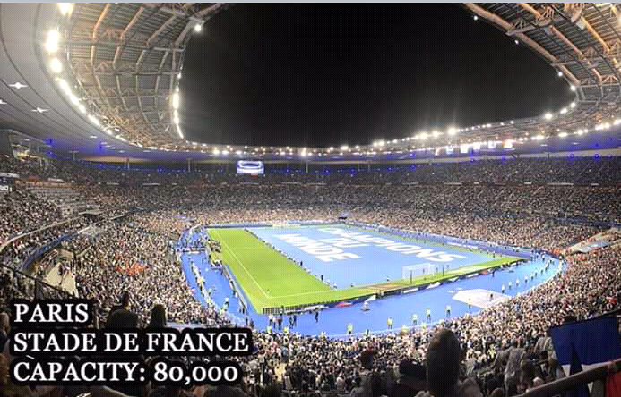
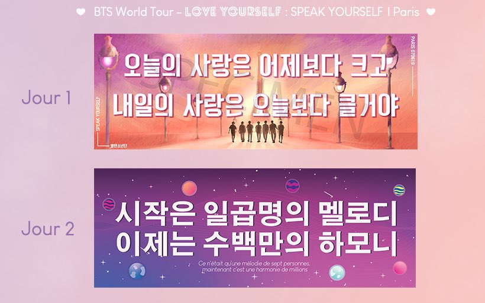
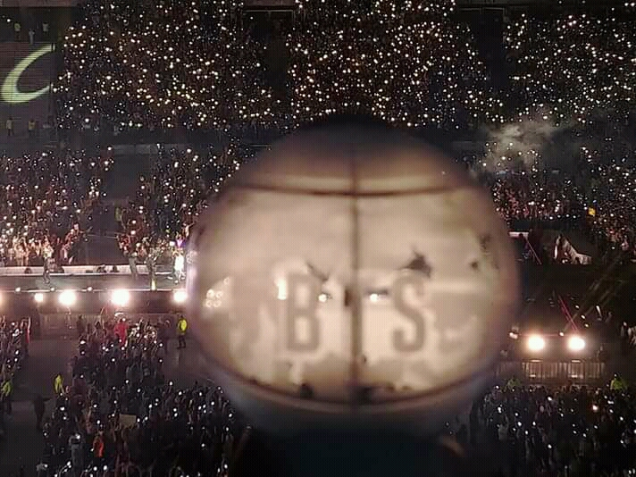
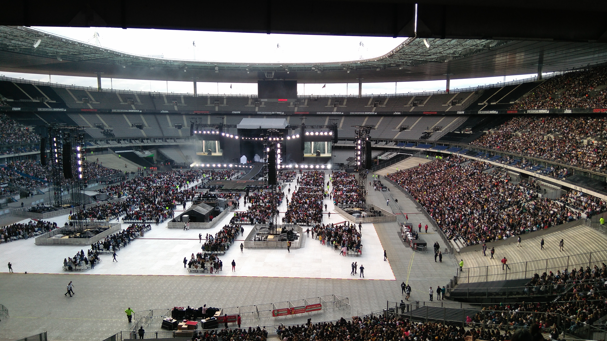

Una ciudad para soñar
Como ya he comentado antes, nuestro viaje a paris realmente solo fue por asistir a este megaconcierto, aquí os comentare un poquito como fue y os dejare unas cuantas imágenes y videos para que veáis el ambiente que había en el Stade de France y conozcáis un poco a BTS
En todos los conciertos de este tipo nos suelen dar Banners que se levantan cuando dan la señal, para que los artistas lean los mensajes que les estamos dando.
Ademas también tenemos un lightstick que representa a BTS y es con lo que hacemos el mar de colores
La verdad que tengo pocas imágenes, pero las justas para que se vea cuantas personas estábamos disfrutando
